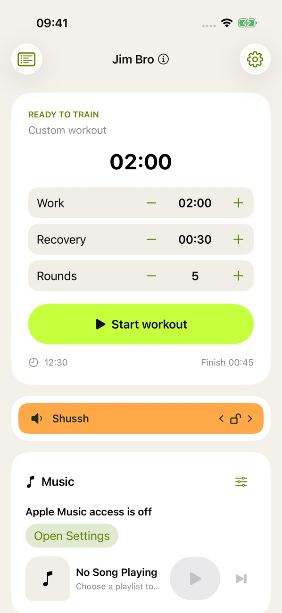
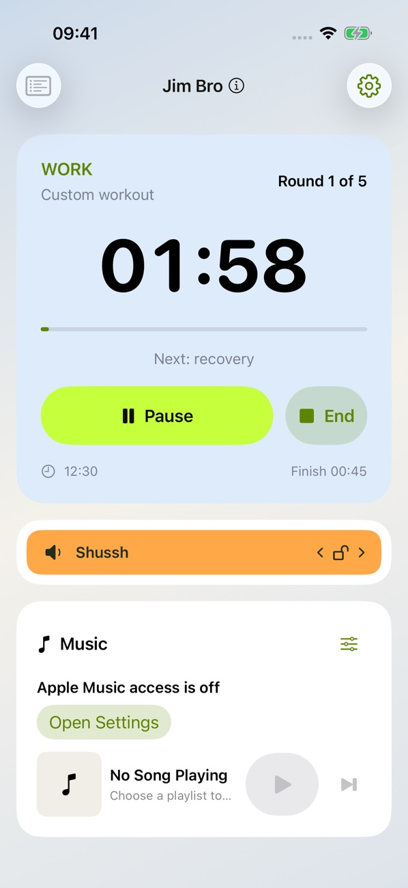
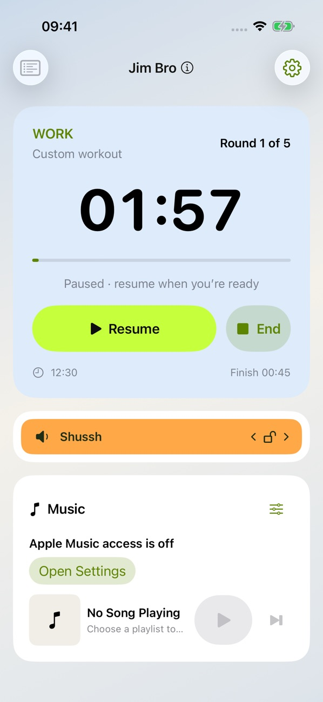
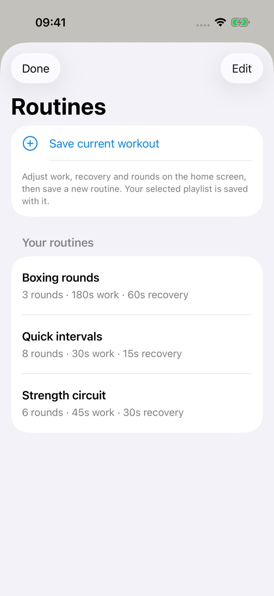
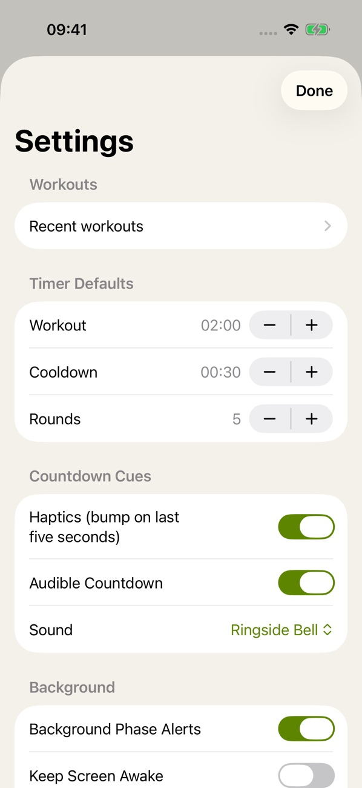

Keep the session flowing
Set your workout and cooldown timings, then follow the current phase and round on one clear screen. Haptic and audible cues help you notice when a phase is approaching its end.
Keep your class moving with workout and recovery timers, Apple Music controls and a quick way to lower the music when it is time to speak. Built for instructors, personal trainers and your own gym sessions.
Set your workout and cooldown timings, then follow the current phase and round on one clear screen. Haptic and audible cues help you notice when a phase is approaching its end.
Keep Apple Music controls with the workout, so you can manage the session without repeatedly switching apps. Choose the music that suits your class.
Use Shhh to lower the music while you give instructions. Spend less time competing with the speakers and more time guiding the people in front of you.
Use the routines screen to organise your sessions. Pause a workout when you need a moment, then pick it back up from the same screen.
See how Jim Bro brings the timer, workout controls and music together, from getting ready to the final round.





Getting started, everyday questions and a way to reach us if you need help.
Class instructors, personal trainers and gym goers who want workout timing and music controls together. Use it to lead a group or keep your own session on track.
Shhh lowers the music so you can give instructions without shouting over it. The control sits alongside your workout, ready when you need to speak.
Jim Bro needs permission to access Apple Music for its music controls. Check the app’s music access in Settings, and make sure the music you want is available through Apple Music. Apple service requirements apply.
Email support@cakesquared.co.uk. For a bug report, include your device model, software version and what happened so we can help.
Last updated: September 2026
Jim Bro does not collect personal data. App Store payments, if any, are handled by Apple.